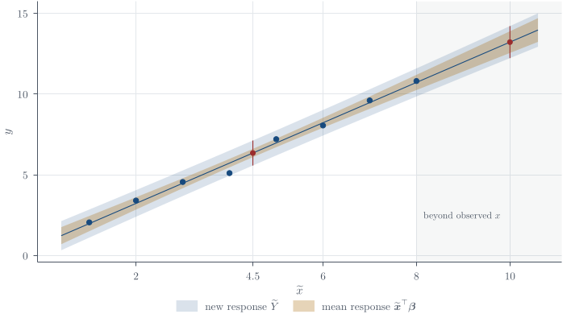

Bayesian linear regression
Part of Bayesian statistics · 8 questions on this topic · What links here
Bayesian linear regression

| Part | Bayesian statistics |
| Chapter | 9 of 9 in this part |
| Previous | Hierarchical Bayes |
| Questions | 8 (6 book, 1 practice, 1 final prep) |
| Definitions | Gaussian linear model · Error and residual · Normal–inverse-Gamma prior · Posterior predictive target |
| Results | Ordinary least squares · Sampling distribution of the OLS estimator · Studentised coefficient pivot · Least-squares decomposition · Conditional coefficient posterior · Marginal variance posterior · Marginal Student posterior · Direct posterior simulation · Normal–inverse-Gamma conjugacy · Posterior prediction under the reference prior |
| Figures | 1 |
Linear regression extends the earlier normal model with unknown mean and variance. Instead of giving every observation the same mean \mu, it gives observation i the mean {\boldsymbol{x}}_i^\top{\boldsymbol{\beta}}. The central calculations are therefore familiar normal–inverse-Gamma calculations, but now in p dimensions and with the geometry of least squares doing the algebraic work.
This chapter develops the model, the least-squares reference calculation, the improper-prior posterior kernel and its quadratic decomposition, the conditional posterior families, and independent informative priors, and then carries the marginalisation, simulation, and prediction arguments through in full.
Least squares is the reference calculation to learn first. It is fast, widely available, and provides the least-squares coordinates and checks used below. Bayesian regression retains that sampling model and adds probability distributions for the unknown coefficients and variance.1
The Gaussian linear model
Regression allows the mean response to change with measured predictors. Let there be n observations and k measured predictors, together with an intercept. There are therefore p=k+1 regression coefficients. For observation i, the scalar model is Y_i =x_{i1}\beta_1+\cdots+x_{ik}\beta_k+\beta_0+\varepsilon_i. \qquad(1) Here x_{ij} is the recorded value of predictor j for observation i. Before the response is observed, Y_i is random; the x_{ij} are known numbers in the model; and the coefficients \beta_0,\ldots,\beta_k are unknown. The term \varepsilon_i represents the part of the response not explained by its mean.
Stacking the scalar equations introduces no new statistical assumption. It is bookkeeping that lets one equation describe all n observations. Using the convention that the intercept comes last, define
{\color{blue}\boldsymbol{X}}= \begin{pmatrix} x_{11}&x_{12}&\cdots&x_{1k}&1\\ x_{21}&x_{22}&\cdots&x_{2k}&1\\ \vdots&\vdots&\ddots&\vdots&\vdots\\ x_{n1}&x_{n2}&\cdots&x_{nk}&1 \end{pmatrix}, \qquad {\boldsymbol{\beta}}= \begin{pmatrix} \beta_1\\ \beta_2\\ \vdots\\ \beta_k\\ \beta_0 \end{pmatrix}.
Thus {\color{blue}\boldsymbol{X}}\in\mathbb{R}^{n\times p} is known, while {\boldsymbol{\beta}}\in\mathbb{R}^p is unknown. The column of ones supplies the intercept in every row. Placing that column first, and \beta_0 first in {\boldsymbol{\beta}}, changes only the ordering of the coefficients.
Now stack the random responses and errors:
{\boldsymbol{Y}}= \begin{pmatrix}Y_1\\ \vdots\\Y_n\end{pmatrix}, \qquad {\boldsymbol{\varepsilon}}= \begin{pmatrix}\varepsilon_1\\ \vdots\\\varepsilon_n\end{pmatrix}.
Matrix multiplication produces the complete vector of true mean responses: \begin{align*} {\color{blue}\boldsymbol{X}}{\boldsymbol{\beta}} &= \begin{pmatrix} \beta_0+x_{11}\beta_1+\cdots+x_{1k}\beta_k\\ \beta_0+x_{21}\beta_1+\cdots+x_{2k}\beta_k\\ \vdots\\ \beta_0+x_{n1}\beta_1+\cdots+x_{nk}\beta_k \end{pmatrix}\\ &=\mathbb{E}({\boldsymbol{Y}}\mid{\boldsymbol{\beta}},\sigma^2,{\color{blue}\boldsymbol{X}}). \end{align*} The adjective true here means “under the model at the unknown parameter value.” It does not mean that these means have been observed.
Definition 1 (Gaussian linear model) Let {\boldsymbol{x}}_i^\top denote row i of {\color{blue}\boldsymbol{X}}. The Gaussian linear model is {\boldsymbol{Y}}={\color{blue}\boldsymbol{X}}{\boldsymbol{\beta}}+{\boldsymbol{\varepsilon}}, \qquad {\boldsymbol{\varepsilon}}\mid\sigma^2 \sim\operatorname{N}_n({\boldsymbol{0}},\sigma^2{\color{blue}\boldsymbol{I}}_n), \qquad(2) and hence {\boldsymbol{Y}}\mid{\boldsymbol{\beta}},\sigma^2,{\color{blue}\boldsymbol{X}} \sim\operatorname{N}_n({\color{blue}\boldsymbol{X}}{\boldsymbol{\beta}},\sigma^2{\color{blue}\boldsymbol{I}}_n). \qquad(3) Equivalently, the errors are independent with \varepsilon_i\sim\operatorname{N}(0,\sigma^2), so every response has variance \sigma^2 and distinct responses have zero covariance.
The design matrix is conditioned on and treated as fixed. This does not claim that its entries were never measured; it says that their uncertainty is not part of this particular model.
From random responses to fitted values
Once the responses have been observed, their realised values are written without capital letters and without hats:
{\boldsymbol{y}}= \begin{pmatrix}y_1\\y_2\\\vdots\\y_n\end{pmatrix}.
These are the actual measured responses. We use {\color{blue}\boldsymbol{X}} and {\boldsymbol{y}} to estimate the unknown coefficient vector, obtaining
\widehat{\boldsymbol{\beta}}= \begin{pmatrix} \widehat\beta_1\\ \widehat\beta_2\\ \vdots\\ \widehat\beta_k\\ \widehat\beta_0 \end{pmatrix}.
The fitted mean responses are then \widehat{{\boldsymbol{y}}}={\color{blue}\boldsymbol{X}}\widehat{\boldsymbol{\beta}}, \qquad \widehat y_i =x_{i1}\widehat\beta_1+\cdots+x_{ik}\widehat\beta_k +\widehat\beta_0. \qquad(4) No new noise is added to these fitted means: \widehat{{\boldsymbol{y}}} estimates the conditional mean {\color{blue}\boldsymbol{X}}{\boldsymbol{\beta}}, not a new random response. Notice also that {\color{blue}\boldsymbol{X}} still has no hat. We use the same recorded predictors after fitting that we used to specify the model.
Subtracting fitted responses from measured responses gives the residual vector \widehat{{\boldsymbol{e}}} ={\boldsymbol{y}}-\widehat{{\boldsymbol{y}}} ={\boldsymbol{y}}-{\color{blue}\boldsymbol{X}}\widehat{\boldsymbol{\beta}} = \begin{pmatrix} y_1-\widehat y_1\\ y_2-\widehat y_2\\ \vdots\\ y_n-\widehat y_n \end{pmatrix}. \qquad(5) The two equations worth keeping side by side are
\boxed{ \begin{aligned} {\boldsymbol{Y}}&={\color{blue}\boldsymbol{X}}{\boldsymbol{\beta}}+{\boldsymbol{\varepsilon}} &&\text{(probability model)},\\[2pt] {\boldsymbol{y}}&={\color{blue}\boldsymbol{X}}\widehat{\boldsymbol{\beta}}+\widehat{{\boldsymbol{e}}} &&\text{(observed data = fitted means + residuals)}. \end{aligned}}
The first equation contains the unknown true coefficients and random errors. The second contains estimated coefficients and calculated residuals, and it holds exactly because of the definition \widehat{{\boldsymbol{e}}}={\boldsymbol{y}}-{\color{blue}\boldsymbol{X}}\widehat{\boldsymbol{\beta}}.
Errors are not residuals
Definition 2 (Error and residual) The true error is
\varepsilon_i=Y_i-{\boldsymbol{x}}_i^\top{\boldsymbol{\beta}},
which contains the unknown true coefficient vector. After fitting the model, the residual is
e_i=y_i-{\boldsymbol{x}}_i^\top\widehat{\boldsymbol{\beta}}.
Errors are independent model variables under Equation 1; residuals are observable functions of the entire fitted dataset and are not iid. The conventional name “sum of squared errors” is therefore slightly loose: the fitted quantity is a sum of squared residuals.
Whenever {\boldsymbol{\beta}} is still a free argument, \sum_i(y_i-{\boldsymbol{x}}_i^\top{\boldsymbol{\beta}})^2 is a function of {\boldsymbol{\beta}}. It becomes the fitted residual sum of squares only after setting {\boldsymbol{\beta}}=\widehat{\boldsymbol{\beta}}.
Classical calculations as a reference
In the repeated-sampling argument, {\boldsymbol{\beta}} denotes the fixed, true coefficient vector. The conditioning bar shows when that vector is treated as fixed.
For a proposed coefficient vector {\boldsymbol{b}}, define \begin{aligned} \operatorname{SSE}({\boldsymbol{b}}) &=\sum_{i=1}^n(y_i-{\boldsymbol{x}}_i^\top{\boldsymbol{b}})^2\\ &=({\boldsymbol{y}}-{\color{blue}\boldsymbol{X}}{\boldsymbol{b}})^\top ({\boldsymbol{y}}-{\color{blue}\boldsymbol{X}}{\boldsymbol{b}})\\ &=\lVert{\boldsymbol{y}}-{\color{blue}\boldsymbol{X}}{\boldsymbol{b}}\rVert_2^2. \end{aligned} \qquad(6) Multiplying out every term gives \begin{align*} \operatorname{SSE}({\boldsymbol{b}}) &={\boldsymbol{y}}^\top{\boldsymbol{y}} -{\boldsymbol{y}}^\top{\color{blue}\boldsymbol{X}}{\boldsymbol{b}} -{\boldsymbol{b}}^\top{\color{blue}\boldsymbol{X}}^\top{\boldsymbol{y}} +{\boldsymbol{b}}^\top{\color{blue}\boldsymbol{X}}^\top{\color{blue}\boldsymbol{X}}{\boldsymbol{b}}\\ &={\boldsymbol{y}}^\top{\boldsymbol{y}} -2{\boldsymbol{b}}^\top{\color{blue}\boldsymbol{X}}^\top{\boldsymbol{y}} +{\boldsymbol{b}}^\top{\color{blue}\boldsymbol{X}}^\top{\color{blue}\boldsymbol{X}}{\boldsymbol{b}}, \end{align*} because the two middle terms are equal scalars. Differentiating with respect to {\boldsymbol{b}},
\frac{\partial}{\partial{\boldsymbol{b}}} \operatorname{SSE}({\boldsymbol{b}}) =-2{\color{blue}\boldsymbol{X}}^\top{\boldsymbol{y}}+2{\color{blue}\boldsymbol{X}}^\top{\color{blue}\boldsymbol{X}}{\boldsymbol{b}}.
At the minimiser this gradient is zero, so the normal equations are
{\color{blue}\boldsymbol{X}}^\top{\color{blue}\boldsymbol{X}}\widehat{\boldsymbol{\beta}} ={\color{blue}\boldsymbol{X}}^\top{\boldsymbol{y}}.
Proposition 1 (Ordinary least squares) Assume that \operatorname{rank}({\color{blue}\boldsymbol{X}})=p. Then {\color{blue}\boldsymbol{X}}^\top{\color{blue}\boldsymbol{X}} is invertible and \boxed{\widehat{\boldsymbol{\beta}} =({\color{blue}\boldsymbol{X}}^\top{\color{blue}\boldsymbol{X}})^{-1}{\color{blue}\boldsymbol{X}}^\top{\boldsymbol{y}}.} \qquad(7) The fitted residual vector and residual sum of squares are \widehat{{\boldsymbol{e}}}={\boldsymbol{y}}-{\color{blue}\boldsymbol{X}}\widehat{\boldsymbol{\beta}}, \qquad \operatorname{SSE} =\widehat{{\boldsymbol{e}}}^{\top}\widehat{{\boldsymbol{e}}} =\lVert\widehat{{\boldsymbol{e}}}\rVert_2^2 =\operatorname{SSE}(\widehat{\boldsymbol{\beta}}). \qquad(8)
The maximum-likelihood estimator of \sigma^2 is \operatorname{SSE}/n. Estimating p coefficients consumes p degrees of freedom, so the usual unbiased estimator is s^2=\widehat\sigma^2=\frac{\operatorname{SSE}}{n-p}. \qquad(9)
To see the sampling distribution of the OLS estimator, substitute {\boldsymbol{Y}}={\color{blue}\boldsymbol{X}}{\boldsymbol{\beta}}+{\boldsymbol{\varepsilon}} into Equation 7: \begin{align*} \widehat{\boldsymbol{\beta}} &=({\color{blue}\boldsymbol{X}}^\top{\color{blue}\boldsymbol{X}})^{-1}{\color{blue}\boldsymbol{X}}^\top ({\color{blue}\boldsymbol{X}}{\boldsymbol{\beta}}+{\boldsymbol{\varepsilon}})\\ &=({\color{blue}\boldsymbol{X}}^\top{\color{blue}\boldsymbol{X}})^{-1}{\color{blue}\boldsymbol{X}}^\top{\color{blue}\boldsymbol{X}}{\boldsymbol{\beta}} +({\color{blue}\boldsymbol{X}}^\top{\color{blue}\boldsymbol{X}})^{-1}{\color{blue}\boldsymbol{X}}^\top {\boldsymbol{\varepsilon}}\\ &={\boldsymbol{\beta}}+({\color{blue}\boldsymbol{X}}^\top{\color{blue}\boldsymbol{X}})^{-1}{\color{blue}\boldsymbol{X}}^\top {\boldsymbol{\varepsilon}}. \end{align*} It is a linear transformation of a normal vector. Its expectation is {\boldsymbol{\beta}}, and its covariance is \begin{align*} \operatorname{Cov}(\widehat{\boldsymbol{\beta}}\mid{\boldsymbol{\beta}},\sigma^2) &=({\color{blue}\boldsymbol{X}}^\top{\color{blue}\boldsymbol{X}})^{-1}{\color{blue}\boldsymbol{X}}^\top (\sigma^2{\color{blue}\boldsymbol{I}}_n){\color{blue}\boldsymbol{X}} ({\color{blue}\boldsymbol{X}}^\top{\color{blue}\boldsymbol{X}})^{-1}\\ &=\sigma^2({\color{blue}\boldsymbol{X}}^\top{\color{blue}\boldsymbol{X}})^{-1}. \end{align*} Therefore the following result holds.
Proposition 2 (Sampling distribution of the OLS estimator) \widehat{\boldsymbol{\beta}}\mid{\boldsymbol{\beta}},\sigma^2,{\color{blue}\boldsymbol{X}} \sim\operatorname{N}_p\!\left( {\boldsymbol{\beta}},\sigma^2({\color{blue}\boldsymbol{X}}^\top{\color{blue}\boldsymbol{X}})^{-1}\right). \qquad(10) Also, \frac{\operatorname{SSE}}{\sigma^2}\sim\chi^2_{n-p}, \qquad \widehat{\boldsymbol{\beta}}\ \text{is independent of }\operatorname{SSE}. \qquad(11)
If c_{jj}=[({\color{blue}\boldsymbol{X}}^\top{\color{blue}\boldsymbol{X}})^{-1}]_{jj}, then
Corollary 1 (Studentised coefficient pivot) \frac{\widehat\beta_j-\beta_j}{s\sqrt{c_{jj}}} \sim t_{n-p}. \qquad(12) Thus \widehat{\boldsymbol{\beta}} itself has the normal distribution Equation 10; the Student distribution appears only after replacing the unknown \sigma by s and standardising.
Likelihood and reference prior
Conditional independence in Equation 1 gives \begin{aligned} p({\boldsymbol{y}}\mid{\boldsymbol{\beta}},\sigma^2,{\color{blue}\boldsymbol{X}}) &=\prod_{i=1}^n \frac1{\sqrt{2\pi\sigma^2}} \exp\!\left\{-\frac{(y_i-{\boldsymbol{x}}_i^\top{\boldsymbol{\beta}})^2} {2\sigma^2}\right\}\\ &=(2\pi\sigma^2)^{-n/2} \exp\!\left\{-\frac{\operatorname{SSE}({\boldsymbol{\beta}})} {2\sigma^2}\right\}. \end{aligned} \qquad(13) The standard improper reference prior is p({\boldsymbol{\beta}},\sigma^2)\propto\frac1{\sigma^2}, \qquad {\boldsymbol{\beta}}\in\mathbb{R}^p,\quad\sigma^2>0. \qquad(14) It is flat in {\boldsymbol{\beta}} and flat in \log\sigma^2, since \,\mathrm{d}(\log\sigma^2)=\,\mathrm{d}\sigma^2/\sigma^2. Neither factor integrates to one, so “uninformative” is a modelling convention, not the absence of assumptions.
An improper reference prior is usable only when the posterior is proper. Here that requires enough information to identify all p regression coefficients, including full column rank and, in the ordinary derivation, n>p. The prior is a limiting device rather than a population from which parameters could literally be simulated, so prior prediction is unavailable under it even when posterior inference is valid.
Bayes’ rule gives the joint posterior kernel p({\boldsymbol{\beta}},\sigma^2\mid{\boldsymbol{y}},{\color{blue}\boldsymbol{X}}) \propto (\sigma^2)^{-(n/2+1)} \exp\!\left\{-\frac{\operatorname{SSE}({\boldsymbol{\beta}})} {2\sigma^2}\right\}. \qquad(15) This kernel defines a proper posterior when
\operatorname{rank}({\color{blue}\boldsymbol{X}})=p, \qquad n>p, \qquad \operatorname{SSE}>0.
For continuous Gaussian data, the last condition holds with probability one under full rank and n>p.
The residual sum-of-squares decomposition
The key step is to rewrite \operatorname{SSE}({\boldsymbol{\beta}}) around its minimiser. The point is to turn the “sum of squares for a potential model” into the fitted residual sum of squares plus a nonnegative quadratic penalty for moving away from \widehat{\boldsymbol{\beta}}.
For any coefficient displacement {\boldsymbol{\delta}}, full column rank gives the equivalent readings {\boldsymbol{\delta}}^\top{\color{blue}\boldsymbol{X}}^\top{\color{blue}\boldsymbol{X}}{\boldsymbol{\delta}} =\lVert{\boldsymbol{\delta}}\rVert_{{\color{blue}\boldsymbol{X}}^\top{\color{blue}\boldsymbol{X}}}^2 =\lVert{\color{blue}\boldsymbol{X}}{\boldsymbol{\delta}}\rVert_2^2. \qquad(16) Thus {\color{blue}\boldsymbol{X}}^\top{\color{blue}\boldsymbol{X}} measures separation between coefficient vectors by the separation they produce between fitted mean vectors. Directions in which the fitted surface changes rapidly are geometrically longer.
Begin with the candidate residual vector: \begin{align*} {\boldsymbol{y}}-{\color{blue}\boldsymbol{X}}{\boldsymbol{\beta}} &={\boldsymbol{y}}-{\color{blue}\boldsymbol{X}}\widehat{\boldsymbol{\beta}} +{\color{blue}\boldsymbol{X}}\widehat{\boldsymbol{\beta}}-{\color{blue}\boldsymbol{X}}{\boldsymbol{\beta}}\\ &=\widehat{{\boldsymbol{e}}} +{\color{blue}\boldsymbol{X}}(\widehat{\boldsymbol{\beta}}-{\boldsymbol{\beta}}). \end{align*} Its squared length is \begin{align*} \operatorname{SSE}({\boldsymbol{\beta}}) &=\left[\widehat{{\boldsymbol{e}}} +{\color{blue}\boldsymbol{X}}(\widehat{\boldsymbol{\beta}}-{\boldsymbol{\beta}})\right]^\top \left[\widehat{{\boldsymbol{e}}} +{\color{blue}\boldsymbol{X}}(\widehat{\boldsymbol{\beta}}-{\boldsymbol{\beta}})\right]\\ &=\left\lVert\widehat{{\boldsymbol{e}}} +{\color{blue}\boldsymbol{X}}(\widehat{\boldsymbol{\beta}}-{\boldsymbol{\beta}})\right\rVert_2^2\\ &=\widehat{{\boldsymbol{e}}}^{\top}\widehat{{\boldsymbol{e}}} +\widehat{{\boldsymbol{e}}}^{\top}{\color{blue}\boldsymbol{X}} (\widehat{\boldsymbol{\beta}}-{\boldsymbol{\beta}}) +(\widehat{\boldsymbol{\beta}}-{\boldsymbol{\beta}})^\top{\color{blue}\boldsymbol{X}}^\top \widehat{{\boldsymbol{e}}}\\ &\qquad +(\widehat{\boldsymbol{\beta}}-{\boldsymbol{\beta}})^\top{\color{blue}\boldsymbol{X}}^\top{\color{blue}\boldsymbol{X}} (\widehat{\boldsymbol{\beta}}-{\boldsymbol{\beta}})\\ &=\operatorname{SSE} +2\widehat{{\boldsymbol{e}}}^{\top}{\color{blue}\boldsymbol{X}} (\widehat{\boldsymbol{\beta}}-{\boldsymbol{\beta}}) +(\widehat{\boldsymbol{\beta}}-{\boldsymbol{\beta}})^\top{\color{blue}\boldsymbol{X}}^\top{\color{blue}\boldsymbol{X}} (\widehat{\boldsymbol{\beta}}-{\boldsymbol{\beta}}). \end{align*} The normal equations imply
{\color{blue}\boldsymbol{X}}^\top\widehat{{\boldsymbol{e}}} ={\color{blue}\boldsymbol{X}}^\top({\boldsymbol{y}}-{\color{blue}\boldsymbol{X}}\widehat{\boldsymbol{\beta}}) ={\boldsymbol{0}},
so \widehat{{\boldsymbol{e}}}^{\top}{\color{blue}\boldsymbol{X}}={\boldsymbol{0}}^\top and the cross-term is zero. Consequently,
Theorem 1 (Least-squares decomposition) \boxed{ \begin{aligned} \operatorname{SSE}({\boldsymbol{\beta}}) &=\operatorname{SSE} +({\boldsymbol{\beta}}-\widehat{\boldsymbol{\beta}})^\top{\color{blue}\boldsymbol{X}}^\top{\color{blue}\boldsymbol{X}} ({\boldsymbol{\beta}}-\widehat{\boldsymbol{\beta}})\\ &=\operatorname{SSE} +\lVert{\boldsymbol{\beta}}-\widehat{\boldsymbol{\beta}}\rVert_{{\color{blue}\boldsymbol{X}}^\top{\color{blue}\boldsymbol{X}}}^2\\ &=\operatorname{SSE} +\lVert{\color{blue}\boldsymbol{X}}({\boldsymbol{\beta}}-\widehat{\boldsymbol{\beta}})\rVert_2^2. \end{aligned}} \qquad(17) The second term is nonnegative because {\color{blue}\boldsymbol{X}}^\top{\color{blue}\boldsymbol{X}} is positive definite. This both proves that OLS minimises the SSE and separates the posterior’s coefficient uncertainty from its fitted residual variation. Geometrically, \widehat{{\boldsymbol{e}}} is orthogonal to the column space of {\color{blue}\boldsymbol{X}}, while {\color{blue}\boldsymbol{X}}(\widehat{\boldsymbol{\beta}}-{\boldsymbol{\beta}}) lies in that column space. The theorem is therefore the Pythagorean theorem for those two orthogonal components of the candidate residual vector.
Recognising the posterior distributions
Substituting Equation 17 into Equation 15 yields \begin{aligned} p({\boldsymbol{\beta}},\sigma^2\mid{\boldsymbol{y}},{\color{blue}\boldsymbol{X}}) \propto{}& (\sigma^2)^{-(n/2+1)} \exp\!\left\{-\frac{\operatorname{SSE}}{2\sigma^2}\right\}\\ &\times \exp\!\left\{-\frac{ ({\boldsymbol{\beta}}-\widehat{\boldsymbol{\beta}})^\top{\color{blue}\boldsymbol{X}}^\top{\color{blue}\boldsymbol{X}} ({\boldsymbol{\beta}}-\widehat{\boldsymbol{\beta}})}{2\sigma^2}\right\}. \end{aligned} \qquad(18) In norm notation, the quadratic exponent in the second factor is
-\frac{ \lVert{\boldsymbol{\beta}}-\widehat{\boldsymbol{\beta}}\rVert_{{\color{blue}\boldsymbol{X}}^\top{\color{blue}\boldsymbol{X}}}^2} {2\sigma^2}.
Its level sets are ellipsoids centred at \widehat{\boldsymbol{\beta}}; the {\color{blue}\boldsymbol{X}}^\top{\color{blue}\boldsymbol{X}} geometry determines their directions and relative widths. These two factors are an inverse-Gamma-looking variance term and a multivariate-normal coefficient term. That recognition is correct in spirit, but the normalising power of \sigma^2 determines whether the variance distribution is conditional or marginal. We therefore restore that power explicitly in the next two steps.
Conditional posterior of the coefficients
Holding \sigma^2 fixed, the terms involving {\boldsymbol{\beta}} have a multivariate normal kernel. In fact,
Proposition 3 (Conditional coefficient posterior) \boxed{ {\boldsymbol{\beta}}\mid\sigma^2,{\boldsymbol{y}},{\color{blue}\boldsymbol{X}} \sim\operatorname{N}_p\!\left( \widehat{\boldsymbol{\beta}}, \sigma^2({\color{blue}\boldsymbol{X}}^\top{\color{blue}\boldsymbol{X}})^{-1}\right).} \qquad(19) To check the normalising factor, set {\color{blue}\boldsymbol{C}}=({\color{blue}\boldsymbol{X}}^\top{\color{blue}\boldsymbol{X}})^{-1}. Then
|\sigma^2{\color{blue}\boldsymbol{C}}|^{-1/2} =(\sigma^2)^{-p/2}|{\color{blue}\boldsymbol{X}}^\top{\color{blue}\boldsymbol{X}}|^{1/2},
and (\sigma^2{\color{blue}\boldsymbol{C}})^{-1} =\sigma^{-2}{\color{blue}\boldsymbol{X}}^\top{\color{blue}\boldsymbol{X}}, exactly matching Equation 18.
Marginal posterior of the variance
Integrating the coefficient kernel over \mathbb{R}^p contributes \begin{align*} &\int_{\mathbb{R}^p} \exp\!\left\{-\frac{ ({\boldsymbol{\beta}}-\widehat{\boldsymbol{\beta}})^\top{\color{blue}\boldsymbol{X}}^\top{\color{blue}\boldsymbol{X}} ({\boldsymbol{\beta}}-\widehat{\boldsymbol{\beta}})}{2\sigma^2}\right\}\,\mathrm{d}{\boldsymbol{\beta}}\\ &\qquad=(2\pi\sigma^2)^{p/2} |{\color{blue}\boldsymbol{X}}^\top{\color{blue}\boldsymbol{X}}|^{-1/2}. \end{align*} The determinant does not depend on \sigma^2, while the power (\sigma^2)^{p/2} changes the variance kernel to \begin{align*} p(\sigma^2\mid{\boldsymbol{y}},{\color{blue}\boldsymbol{X}}) &\propto (\sigma^2)^{-(n/2+1)}(\sigma^2)^{p/2} \exp\!\left\{-\frac{\operatorname{SSE}}{2\sigma^2}\right\}\\ &=(\sigma^2)^{-\{(n-p)/2+1\}} \exp\!\left\{-\frac{\operatorname{SSE}/2}{\sigma^2}\right\}. \end{align*} Under the book’s inverse-Gamma convention,
Proposition 4 (Marginal variance posterior) \boxed{ \sigma^2\mid{\boldsymbol{y}},{\color{blue}\boldsymbol{X}} \sim\operatorname{InvGamma}\!\left( \frac{n-p}{2},\frac{\operatorname{SSE}}2\right).} \qquad(20) The p/2 from the normalising constant is subtracted from n/2; it is not added. Equivalently, \frac{\operatorname{SSE}}{\sigma^2}\mid{\boldsymbol{y}},{\color{blue}\boldsymbol{X}} \sim\chi^2_{n-p}. \qquad(21) If n>p+2, the posterior mean exists and is
\mathbb{E}(\sigma^2\mid{\boldsymbol{y}},{\color{blue}\boldsymbol{X}}) =\frac{\operatorname{SSE}}{n-p-2} =\frac{n-p}{n-p-2}s^2.
The posterior mode is \operatorname{SSE}/(n-p+2). Thus the unbiased estimator s^2 is generally neither the posterior mean nor the posterior mode; calling any one quantity “the estimate” implicitly chooses a loss function.
Marginal posterior of the coefficients
Let \nu=n-p, {\color{blue}\boldsymbol{C}}=({\color{blue}\boldsymbol{X}}^\top{\color{blue}\boldsymbol{X}})^{-1}, and \begin{align*} Q({\boldsymbol{\beta}}) &=({\boldsymbol{\beta}}-\widehat{\boldsymbol{\beta}})^\top {\color{blue}\boldsymbol{C}}^{-1}({\boldsymbol{\beta}}-\widehat{\boldsymbol{\beta}})\\ &=\lVert{\boldsymbol{\beta}}-\widehat{\boldsymbol{\beta}}\rVert_{{\color{blue}\boldsymbol{C}}^{-1}}^2\\ &=\lVert{\color{blue}\boldsymbol{X}}({\boldsymbol{\beta}}-\widehat{\boldsymbol{\beta}})\rVert_2^2. \end{align*} Thus Q({\boldsymbol{\beta}}) is squared distance from the least-squares centre in the coefficient geometry induced by the design. Multiplying the normal density in Equation 19 by the inverse-Gamma density in Equation 20 and integrating gives \begin{align*} p({\boldsymbol{\beta}}\mid{\boldsymbol{y}},{\color{blue}\boldsymbol{X}}) &\propto\int_0^\infty (\sigma^2)^{-\{(p+\nu)/2+1\}} \exp\!\left\{-\frac{\operatorname{SSE}+Q({\boldsymbol{\beta}})} {2\sigma^2}\right\}\,\mathrm{d}\sigma^2. \end{align*} For a,c>0,
\int_0^\infty u^{-(a+1)}e^{-c/u}\,\mathrm{d} u=\Gamma(a)c^{-a}.
Using a=(p+\nu)/2 and c=\{\operatorname{SSE}+Q({\boldsymbol{\beta}})\}/2 therefore yields \begin{align*} p({\boldsymbol{\beta}}\mid{\boldsymbol{y}},{\color{blue}\boldsymbol{X}}) &\propto \{\operatorname{SSE}+Q({\boldsymbol{\beta}})\}^{-(p+\nu)/2}\\ &\propto \left\{1+\frac{Q({\boldsymbol{\beta}})}{\nu s^2}\right\}^{-(p+\nu)/2}, \end{align*} because \operatorname{SSE}=\nu s^2. This is the multivariate Student distribution
Corollary 2 (Marginal Student posterior) \boxed{ {\boldsymbol{\beta}}\mid{\boldsymbol{y}},{\color{blue}\boldsymbol{X}} \sim t_{n-p}\!\left( \widehat{\boldsymbol{\beta}}, s^2({\color{blue}\boldsymbol{X}}^\top{\color{blue}\boldsymbol{X}})^{-1}\right),} \qquad(22) where the displayed matrix is the multivariate t scale matrix. In particular, \beta_j\mid{\boldsymbol{y}},{\color{blue}\boldsymbol{X}} \sim t_{n-p}\!\left(\widehat\beta_j,s\sqrt{c_{jj}}\right), \qquad(23) so an equal-tailed 100(1-\alpha)\% credible interval is \widehat\beta_j\ \pm\ t_{1-\alpha/2,n-p}s\sqrt{c_{jj}}. \qquad(24) Its endpoints coincide with the usual classical interval under this reference prior. The interpretations do not coincide: the Bayesian statement concerns posterior uncertainty about \beta_j for the observed data, whereas the frequentist statement concerns repeated-sample coverage by a random interval.
Direct simulation and genuine Gibbs sampling
The posterior factorisation
p({\boldsymbol{\beta}},\sigma^2\mid{\boldsymbol{y}}) =p({\boldsymbol{\beta}}\mid\sigma^2,{\boldsymbol{y}}) p(\sigma^2\mid{\boldsymbol{y}})
gives direct ancestral simulation. For m=1,\ldots,M:
Proposition 5 (Direct posterior simulation)
- draw
\sigma^{2(m)}\sim\operatorname{InvGamma}\!\left( \frac{n-p}{2},\frac{\operatorname{SSE}}2\right);
- conditional on that draw, draw
{\boldsymbol{\beta}}^{(m)}\sim\operatorname{N}_p\!\left( \widehat{\boldsymbol{\beta}}, \sigma^{2(m)}({\color{blue}\boldsymbol{X}}^\top{\color{blue}\boldsymbol{X}})^{-1}\right).
The resulting pairs are iid joint-posterior draws. There is no burn-in, serial dependence, or convergence diagnostic.
The following base-R calculation implements the proposition. The design matrix X includes the intercept column and y is the response vector. The derivation has already supplied the inverse-Gamma parameters and the coefficient covariance; the computer now performs the random generation and the matrix arithmetic. The final two lines produce the posterior predictive distribution at \widetilde x=4.5 by adding a new observation’s noise to every coefficient draw.
fit <- lm.fit(X, y)
beta_hat <- fit$coefficients
SSE <- sum(fit$residuals^2)
p <- ncol(X)
nu <- nrow(X) - p
XtX_inv <- solve(crossprod(X))
set.seed(3500)
M <- 10000L
sigma2 <- 1 / rgamma(M, shape = nu / 2, rate = SSE / 2)
Z <- matrix(rnorm(M * p), M, p)
beta <- sweep(Z %*% chol(XtX_inv), 1, sqrt(sigma2), "*")
beta <- sweep(beta, 2, beta_hat, "+")
x_new <- c(1, 4.5)
mu_new <- drop(beta %*% x_new)
y_new <- rnorm(M, mean = mu_new, sd = sqrt(sigma2))
quantile(y_new, c(0.025, 0.5, 0.975))These are independent ancestral draws. Running generic MCMC here would add dependence and convergence questions to a problem that already has a direct solution. The distinction is computationally important as well as terminological.
If one deliberately constructs a Gibbs sampler, the variance must instead be conditioned on the current coefficient vector. From Equation 15, \sigma^2\mid{\boldsymbol{\beta}},{\boldsymbol{y}},{\color{blue}\boldsymbol{X}} \sim\operatorname{InvGamma}\!\left( \frac n2,\frac{\operatorname{SSE}({\boldsymbol{\beta}})}2\right). \qquad(25) A Gibbs sweep alternates Equation 19 and Equation 25. For this model the direct sampler is simpler. The two variance distributions should not be confused:
| Posterior | Shape | Sum of squares |
|---|---|---|
| \sigma^2\mid{\boldsymbol{y}} | (n-p)/2 | fitted \operatorname{SSE} |
| \sigma^2\mid{\boldsymbol{\beta}},{\boldsymbol{y}} | n/2 | \operatorname{SSE}({\boldsymbol{\beta}}) |
Informative priors and regularisation
The independent priors are
{\boldsymbol{\beta}}\sim\operatorname{N}_p({\boldsymbol{m}}_0,{\color{blue}\boldsymbol{V}}_0), \qquad \sigma^2\sim\operatorname{InvGamma}(a_0,b_0).
Under this specification the model is conditionally conjugate. Collecting quadratic terms in {\boldsymbol{\beta}} gives \begin{align*} {\color{blue}\boldsymbol{V}}_\beta^{-1} &=\frac{{\color{blue}\boldsymbol{X}}^\top{\color{blue}\boldsymbol{X}}}{\sigma^2}+{\color{blue}\boldsymbol{V}}_0^{-1},\\ {\boldsymbol{m}}_\beta &={\color{blue}\boldsymbol{V}}_\beta\left( \frac{{\color{blue}\boldsymbol{X}}^\top{\boldsymbol{y}}}{\sigma^2} +{\color{blue}\boldsymbol{V}}_0^{-1}{\boldsymbol{m}}_0\right), \end{align*} and hence \begin{aligned} {\boldsymbol{\beta}}\mid\sigma^2,{\boldsymbol{y}} &\sim\operatorname{N}_p({\boldsymbol{m}}_\beta,{\color{blue}\boldsymbol{V}}_\beta), \\ \sigma^2\mid{\boldsymbol{\beta}},{\boldsymbol{y}} &\sim\operatorname{InvGamma}\!\left( a_0+\frac n2, b_0+\frac12\operatorname{SSE}({\boldsymbol{\beta}})\right). \end{aligned} \qquad(26) These full conditionals define a Gibbs sampler, but prior independence is not the usual jointly conjugate normal–inverse-Gamma family.
Definition 3 (Normal–inverse-Gamma prior) Full joint conjugacy is obtained from the scaled prior {\boldsymbol{\beta}}\mid\sigma^2 \sim\operatorname{N}_p({\boldsymbol{m}}_0,\sigma^2{\color{blue}\boldsymbol{V}}_0), \qquad \sigma^2\sim\operatorname{InvGamma}(a_0,b_0). \qquad(27)
Define \begin{aligned} {\color{blue}\boldsymbol{V}}_n^{-1}&={\color{blue}\boldsymbol{V}}_0^{-1}+{\color{blue}\boldsymbol{X}}^\top{\color{blue}\boldsymbol{X}}, \\ {\boldsymbol{m}}_n&={\color{blue}\boldsymbol{V}}_n ({\color{blue}\boldsymbol{V}}_0^{-1}{\boldsymbol{m}}_0+{\color{blue}\boldsymbol{X}}^\top{\boldsymbol{y}}). \end{aligned} \qquad(28) The two quadratic forms combine as \begin{align*} &({\boldsymbol{y}}-{\color{blue}\boldsymbol{X}}{\boldsymbol{\beta}})^\top({\boldsymbol{y}}-{\color{blue}\boldsymbol{X}}{\boldsymbol{\beta}}) +({\boldsymbol{\beta}}-{\boldsymbol{m}}_0)^\top{\color{blue}\boldsymbol{V}}_0^{-1} ({\boldsymbol{\beta}}-{\boldsymbol{m}}_0)\\ &\quad={\boldsymbol{y}}^\top{\boldsymbol{y}}+{\boldsymbol{m}}_0^\top{\color{blue}\boldsymbol{V}}_0^{-1} {\boldsymbol{m}}_0 -2{\boldsymbol{\beta}}^\top({\color{blue}\boldsymbol{X}}^\top{\boldsymbol{y}}+{\color{blue}\boldsymbol{V}}_0^{-1}{\boldsymbol{m}}_0) +{\boldsymbol{\beta}}^\top{\color{blue}\boldsymbol{V}}_n^{-1}{\boldsymbol{\beta}}\\ &\quad=({\boldsymbol{\beta}}-{\boldsymbol{m}}_n)^\top{\color{blue}\boldsymbol{V}}_n^{-1} ({\boldsymbol{\beta}}-{\boldsymbol{m}}_n) +{\boldsymbol{y}}^\top{\boldsymbol{y}}+{\boldsymbol{m}}_0^\top{\color{blue}\boldsymbol{V}}_0^{-1}{\boldsymbol{m}}_0 -{\boldsymbol{m}}_n^\top{\color{blue}\boldsymbol{V}}_n^{-1}{\boldsymbol{m}}_n. \end{align*} The first line has the geometric reading
\lVert{\boldsymbol{y}}-{\color{blue}\boldsymbol{X}}{\boldsymbol{\beta}}\rVert_2^2 +\lVert{\boldsymbol{\beta}}-{\boldsymbol{m}}_0\rVert_{{\color{blue}\boldsymbol{V}}_0^{-1}}^2.
It adds squared data-space misfit to squared distance from the prior centre, measured in the prior-precision geometry. After completing the square, the coefficient-dependent term on the final line is \lVert{\boldsymbol{\beta}}-{\boldsymbol{m}}_n\rVert_{{\color{blue}\boldsymbol{V}}_n^{-1}}^2. Therefore, with \begin{align*} a_n&=a_0+\frac n2,\\ b_n&=b_0+\frac12\left( {\boldsymbol{y}}^\top{\boldsymbol{y}} +{\boldsymbol{m}}_0^\top{\color{blue}\boldsymbol{V}}_0^{-1}{\boldsymbol{m}}_0 -{\boldsymbol{m}}_n^\top{\color{blue}\boldsymbol{V}}_n^{-1}{\boldsymbol{m}}_n \right), \end{align*} the posterior remains normal–inverse-Gamma.
Theorem 2 (Normal–inverse-Gamma conjugacy) {\boldsymbol{\beta}}\mid\sigma^2,{\boldsymbol{y}} \sim\operatorname{N}_p({\boldsymbol{m}}_n,\sigma^2{\color{blue}\boldsymbol{V}}_n), \qquad \sigma^2\mid{\boldsymbol{y}}\sim\operatorname{InvGamma}(a_n,b_n). \qquad(29)
A centred normal prior also explains ridge regularisation. If \sigma^2 is fixed and {\boldsymbol{\beta}}\sim\operatorname{N}_p({\boldsymbol{0}},\tau^2{\color{blue}\boldsymbol{I}}_p), then \begin{align*} -2\sigma^2\log p({\boldsymbol{\beta}}\mid{\boldsymbol{y}}) &=\operatorname{SSE}({\boldsymbol{\beta}}) +\frac{\sigma^2}{\tau^2}\lVert{\boldsymbol{\beta}}\rVert^2 +\text{a constant}\\ &=\lVert{\boldsymbol{y}}-{\color{blue}\boldsymbol{X}}{\boldsymbol{\beta}}\rVert_2^2 +\frac{\sigma^2}{\tau^2}\lVert{\boldsymbol{\beta}}\rVert_2^2 +\text{the same constant}. \end{align*} The MAP therefore minimises a ridge objective: Euclidean data-space error is balanced against squared Euclidean distance of the coefficient vector from the prior centre, here {\boldsymbol{0}}. A Laplace prior similarly produces an L^1 penalty related to the lasso. MAP keeps only the posterior mode; full Bayes retains coefficient uncertainty and averages predictions over the posterior.
In machine learning, priors are often introduced mainly as regularisers. That is a legitimate computational use, but it changes the emphasis: the MAP acts like a penalised estimate, while the rest of the posterior may be ignored. For statistical inference the posterior is reported, rather than only a penalised point estimate, because coefficient uncertainty and its dependence feed directly into predictions.
Posterior prediction
Definition 4 (Posterior predictive target) Prediction requires a new random quantity; estimating a fitted mean and predicting a new observation are not the same problem. For a new predictor vector \widetilde{\boldsymbol{x}}, suppose \widetilde Y\mid{\boldsymbol{\beta}},\sigma^2,\widetilde{\boldsymbol{x}} \sim\operatorname{N}(\widetilde{\boldsymbol{x}}^\top{\boldsymbol{\beta}},\sigma^2). \qquad(30) The posterior predictive density is p(\widetilde y\mid{\boldsymbol{y}},{\color{blue}\boldsymbol{X}},\widetilde{\boldsymbol{x}}) =\int_0^\infty\int_{\mathbb{R}^p} p(\widetilde y\mid{\boldsymbol{\beta}},\sigma^2,\widetilde{\boldsymbol{x}}) p({\boldsymbol{\beta}},\sigma^2\mid{\boldsymbol{y}},{\color{blue}\boldsymbol{X}}) \,\mathrm{d}{\boldsymbol{\beta}}\,\mathrm{d}\sigma^2. \qquad(31)
If the goal is a new response, posterior prediction is not optional decoration. A fitted mean describes uncertainty about the regression surface; a future observation also contains a new error term. Averaging over ({\boldsymbol{\beta}},\sigma^2) carries both sources of uncertainty forward, which is why a predictive interval is wider than an interval for the mean response at the same predictor value.
Let
h(\widetilde{\boldsymbol{x}}) =\widetilde{\boldsymbol{x}}^\top({\color{blue}\boldsymbol{X}}^\top{\color{blue}\boldsymbol{X}})^{-1} \widetilde{\boldsymbol{x}} =\lVert\widetilde{\boldsymbol{x}}\rVert_{({\color{blue}\boldsymbol{X}}^\top{\color{blue}\boldsymbol{X}})^{-1}}^2.
Thus leverage is the squared length of the new predictor in the covariance geometry of the fitted coefficients, before multiplying by \sigma^2. By the linear-transformation rule applied to Equation 19, \widetilde{\boldsymbol{x}}^\top{\boldsymbol{\beta}}\mid\sigma^2,{\boldsymbol{y}},{\color{blue}\boldsymbol{X}} \sim\operatorname{N}\!\left( \widetilde{\boldsymbol{x}}^\top\widehat{\boldsymbol{\beta}}, \sigma^2h(\widetilde{\boldsymbol{x}})\right). \qquad(32) For a future response, the independent new error contributes another \sigma^2, so integrating {\boldsymbol{\beta}} first gives \widetilde Y\mid\sigma^2,{\boldsymbol{y}},{\color{blue}\boldsymbol{X}},\widetilde{\boldsymbol{x}} \sim\operatorname{N}\!\left( \widetilde{\boldsymbol{x}}^\top\widehat{\boldsymbol{\beta}}, \sigma^2\{1+h(\widetilde{\boldsymbol{x}})\}\right). \qquad(33) Finally integrate \sigma^2 using Equation 20. The same normal–inverse-Gamma mixture that produced Equation 22 gives
Theorem 3 (Posterior prediction under the reference prior) \boxed{ \widetilde Y\mid{\boldsymbol{y}},{\color{blue}\boldsymbol{X}},\widetilde{\boldsymbol{x}} \sim t_{n-p}\!\left( \widetilde{\boldsymbol{x}}^\top\widehat{\boldsymbol{\beta}}, s\sqrt{1+h(\widetilde{\boldsymbol{x}})}\right).} \qquad(34) For the unknown mean response itself, there is no new observational error: \widetilde{\boldsymbol{x}}^\top{\boldsymbol{\beta}}\mid{\boldsymbol{y}},{\color{blue}\boldsymbol{X}} \sim t_{n-p}\!\left( \widetilde{\boldsymbol{x}}^\top\widehat{\boldsymbol{\beta}}, s\sqrt{h(\widetilde{\boldsymbol{x}})}\right). \qquad(35)
The distinction is summarised by the scale terms.
| Target | Posterior centre | Squared scale |
|---|---|---|
| Coefficient \beta_j | \widehat\beta_j | s^2 c_{jj} |
| Mean at \widetilde{\boldsymbol{x}} | \widetilde{\boldsymbol{x}}^\top\widehat{\boldsymbol{\beta}} | s^2 h(\widetilde{\boldsymbol{x}}) |
| New response at \widetilde{\boldsymbol{x}} | \widetilde{\boldsymbol{x}}^\top\widehat{\boldsymbol{\beta}} | s^2\{1+h(\widetilde{\boldsymbol{x}})\} |
The extra 1 is irreducible future observational noise. The leverage term h(\widetilde{\boldsymbol{x}}) measures uncertainty about the fitted line and typically grows during extrapolation. Posterior predictive simulation provides the same answer without closed-form algebra: for every posterior draw, generate
\widetilde Y^{(m)}\sim\operatorname{N}\!\left( \widetilde{\boldsymbol{x}}^\top{\boldsymbol{\beta}}^{(m)},\sigma^{2(m)}\right).
The empirical distribution of these values approximates the posterior predictive distribution and directly supplies predictive means, quantiles, and intervals.
Worked regression example
Example 1 (Eight-point regression) Consider n=8 observations with one predictor and an intercept:
{\boldsymbol{x}}=(1,2,3,4,5,6,7,8)^{\mathsf T}, \qquad {\boldsymbol{y}}=(2.05,3.40,4.55,5.10,7.20,8.05,9.60,10.80)^\top.
Question. Under the reference-prior analysis developed above, compute \widehat{\boldsymbol{\beta}}, the fitted sum of squared errors, the posterior distributions of \sigma^2 and {\boldsymbol{\beta}}, and marginal 95\% credible intervals for the two regression coefficients. Then derive posterior predictive distributions at \widetilde x=4.5 and \widetilde x=10 and explain the effect of extrapolation.
Solution. For this example put the intercept first, so the ith row of {\color{blue}\boldsymbol{X}} is (1,x_i). Direct summation gives
\sum_i y_i=50.75, \qquad \sum_i x_i y_i=280.80, \qquad \sum_i y_i^2=387.9175.
Therefore
{\color{blue}\boldsymbol{X}}^\top{\color{blue}\boldsymbol{X}}= \begin{pmatrix}8&36\\36&204\end{pmatrix}, \qquad {\color{blue}\boldsymbol{X}}^\top{\boldsymbol{y}}= \begin{pmatrix}50.75\\280.80\end{pmatrix}.
The determinant is 8(204)-36^2=336, so
({\color{blue}\boldsymbol{X}}^\top{\color{blue}\boldsymbol{X}})^{-1} =\frac1{336}\begin{pmatrix}204&-36\\-36&8\end{pmatrix} =\begin{pmatrix} 0.607143&-0.107143\\ -0.107143&0.023810 \end{pmatrix}.
Multiplying by {\color{blue}\boldsymbol{X}}^\top{\boldsymbol{y}}, \begin{align*} \widehat{\boldsymbol{\beta}} &=\frac1{336} \begin{pmatrix}204&-36\\-36&8\end{pmatrix} \begin{pmatrix}50.75\\280.80\end{pmatrix}\\ &=\frac1{336} \begin{pmatrix} 204(50.75)-36(280.80)\\ -36(50.75)+8(280.80) \end{pmatrix}\\ &=\begin{pmatrix}0.726786\\1.248214\end{pmatrix}. \end{align*} The fitted SSE can be calculated without listing every residual: \begin{align*} \operatorname{SSE} &={\boldsymbol{y}}^\top{\boldsymbol{y}}-\widehat{\boldsymbol{\beta}}^\top{\color{blue}\boldsymbol{X}}^\top{\boldsymbol{y}}\\ &=387.9175 -\frac{244.2}{336}(50.75)-\frac{419.4}{336}(280.80)\\ &\approx0.534554. \end{align*} The exact coefficients are kept here rather than the six-figure decimals printed above. The subtraction cancels almost everything: two quantities near 387.9 leave a remainder near 0.53, so rounding \widehat{\boldsymbol{\beta}} first costs about four significant figures in \operatorname{SSE}. Summing the squared residuals directly avoids the cancellation entirely.
Thus n-p=6 and
s^2=\frac{0.534554}{6}\approx0.089092.
Under the reference prior, \begin{align*} \sigma^2\mid{\boldsymbol{y}} &\sim\operatorname{InvGamma}(3,0.267277),\\ {\boldsymbol{\beta}}\mid{\boldsymbol{y}} &\sim t_6\!\left( \begin{pmatrix}0.726786\\1.248214\end{pmatrix}, 0.089092 \begin{pmatrix} 0.607143&-0.107143\\ -0.107143&0.023810 \end{pmatrix}\right). \end{align*} The variance summaries illustrate why the loss function matters:
\mathbb{E}(\sigma^2\mid{\boldsymbol{y}})=\frac{0.267277}{3-1}=0.133638, \qquad \operatorname{mode}(\sigma^2\mid{\boldsymbol{y}}) =\frac{0.267277}{3+1}=0.066819,
while s^2=0.089092. Using t_{0.975,6}\approx2.447, the marginal 95\% credible intervals are approximately
\beta_0\mid{\boldsymbol{y}}:\ (0.158,1.296), \qquad \beta_1\mid{\boldsymbol{y}}:\ (1.136,1.361).
At \widetilde x=4.5, take \widetilde{\boldsymbol{x}}=(1,4.5)^\top. Matrix multiplication gives
h(\widetilde{\boldsymbol{x}}) =(1,4.5)({\color{blue}\boldsymbol{X}}^\top{\color{blue}\boldsymbol{X}})^{-1} \begin{pmatrix}1\\4.5\end{pmatrix}=0.125,
and the predicted centre is
\widetilde{\boldsymbol{x}}^\top\widehat{\boldsymbol{\beta}} =0.726786+4.5(1.248214)=6.34375.
Consequently,
\widetilde Y\mid{\boldsymbol{y}},\widetilde x=4.5 \sim t_6\!\left(6.34375, \sqrt{0.089092(1.125)}\right) \approx t_6(6.344,0.317).
At \widetilde x=10, the centre is about 13.209 and h(\widetilde{\boldsymbol{x}})\approx0.845, giving predictive scale about 0.405. The increase from 0.317 is the uncertainty cost of extrapolating beyond the observed predictor range.
Three corrections and a problem-solving checklist
Three distinctions are worth making explicit.
Remark 1 (Three easy confusions).
\widehat{\boldsymbol{\beta}} has an exact normal sampling distribution when \sigma^2 is known. The t distribution applies after studentisation by s.
The marginal variance posterior has inverse-Gamma shape (n-p)/2, not (n+p)/2. The p/2 belongs to the coefficient normalising constant and must be subtracted from the original power.
Drawing first from p(\sigma^2\mid{\boldsymbol{y}}) and then from p({\boldsymbol{\beta}}\mid\sigma^2,{\boldsymbol{y}}) produces iid posterior draws. A genuine Gibbs sampler instead uses p(\sigma^2\mid{\boldsymbol{\beta}},{\boldsymbol{y}}) and therefore produces a Markov chain.
For an unseen problem, the reliable route is:
state the model using errors, and state whether {\color{blue}\boldsymbol{X}} is fixed;
check \operatorname{rank}({\color{blue}\boldsymbol{X}})=p and n>p;
form the likelihood using the free {\boldsymbol{\beta}}, not \widehat{\boldsymbol{\beta}};
decompose the candidate SSE with Equation 17;
read off Equation 19 and derive Equation 20 by accounting for the normalising power;
decide whether the target is a coefficient, a fitted mean, or a future response; and
use direct posterior simulation when it is available rather than introducing unnecessary MCMC dependence.
Bayesian linear regression is the unknown-mean normal model in p dimensions. Least-squares geometry supplies the quadratic decomposition; Bayesian conditioning turns it into normal, inverse-Gamma, and Student posteriors; and posterior prediction adds future observational noise to parameter uncertainty.
Questions on this topic
Open a question to attempt it. Its worked answer is folded away at the bottom of the page.
| Question | Source | Answer |
|---|---|---|
| Errors and residuals | Book exercise | – |
| Normal before Student | Book exercise | – |
| The inverse-Gamma shape trap | Book exercise | – |
| Direct sampling or Gibbs? | Book exercise | – |
| Mean response or new response? | Book exercise | – |
| Independent and scaled priors | Book exercise | – |
| Q24. Bayesian regression and prediction | Practice set | ✓ |
| Question 5. Normal–inverse-\chi^2 regression | Final preparation | ✓ |
What links here
Pages (2)
- Conjugate analysis for normal models — via normal–inverse-Gamma
- Reference formulas and problem-solving workflow — via Equation (19) in Bayesian linear regression, Equation (22) in Bayesian linear regression
Questions and answers (7)
- Book exercises: Normal before Student · The inverse-Gamma shape trap · Independent and scaled priors
- Practice set: Q24 · Q58 (answer)
- Final preparation: Question 4 (answer) · Question 18 (answer)
See also
- Articles from this chapter: Gaussian linear model · Error and residual · Ordinary least squares · Sampling distribution of the OLS estimator · Studentised coefficient pivot · Least-squares decomposition · Conditional coefficient posterior · Marginal variance posterior · Marginal Student posterior · Direct posterior simulation · Normal–inverse-Gamma prior · Normal–inverse-Gamma conjugacy · Posterior predictive target · Posterior prediction under the reference prior · Three easy confusions
- All bayesian statistics chapters
- Glossary and index
- Distribution sheet and formula lookup
Footnotes
This ordering is pedagogical, not philosophical. Least squares is quicker to fit and gives a set of results against which the Bayesian algebra should be checked.↩︎